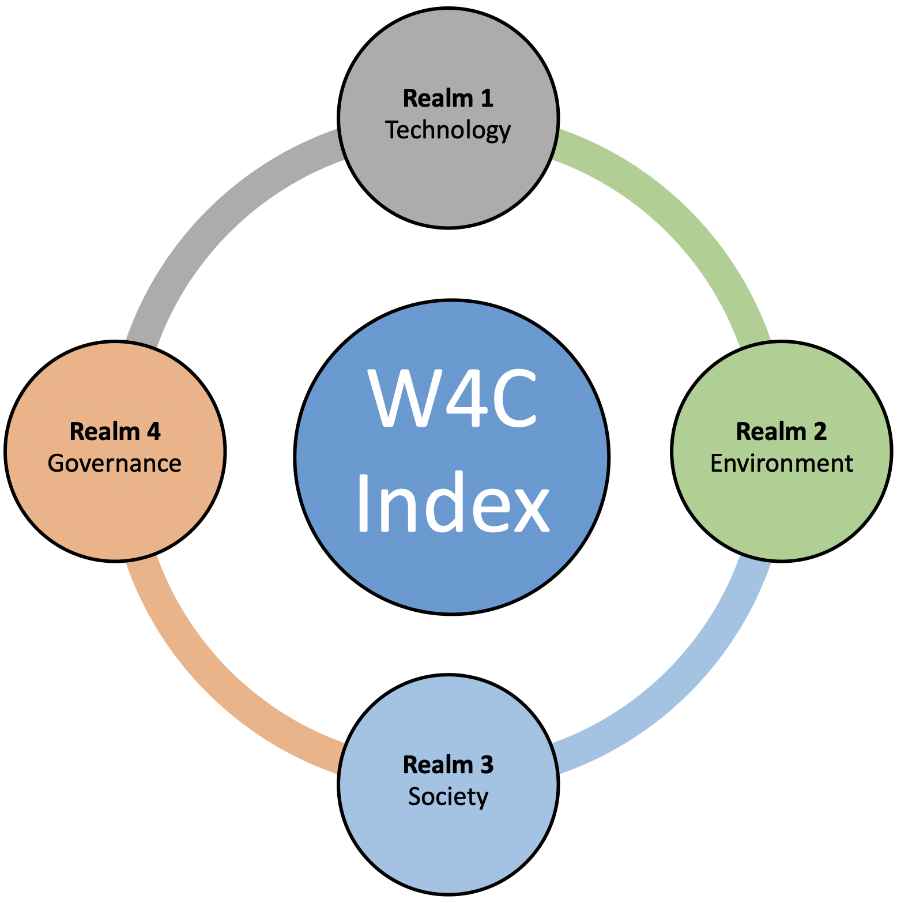

Measuring Water Sensitivity in Indian Urban Landscapes
Innovative solutions for urban water systems.
Protecting and enhancing urban aquatic ecosystems.
Empowering communities for water stewardship.
Strengthening policy and institutional frameworks.
The W4C Index is a comprehensive tool designed to evaluate and enhance water sensitivity in Indian cities, focusing on four key realms: Technology, Environment, Society, and Governance.
Use our comprehensive calculator to evaluate and improve your city's water management.
Launch Calculator